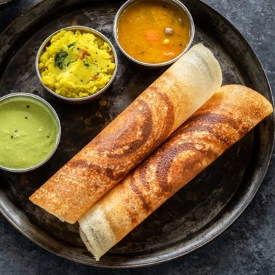

Masala Dosa

Masala dosa are crispy, soft, savory and healthy crepes made with a rice and lentil batter. The dosa are gluten-free and dairy-free, with a sturdy yet soft texture that’s great for holding a hearty homemade potato filling.
To make the batter, lentils and rice are soaked for several hours and then blended together. This makes a creamy and smooth batter. This rice and lentil batter is fermented overnight to create just the right tangy flavor and tender, light crepes.
Dosa Batter is quickly cooked like a thin pancake on a hot griddle, with your choice of oil or butter or ghee. The crepe is then filled with a spiced potato and onion filling, and served with Sambar and Coconut Chutney.
You can easily customize this recipe to fit your tastes by adding grated paneer, cheese, extra veggies (like peas, carrots, cauliflower, and/or green beans) to the potato filling, and serving with other favorite dipping sauces or side dishes.
Ingredients
for batter:
- 3 cup sona masuri rice
- ½ tsp methi / fenugreek seeds
- water, for soaking
- 1 cup urad dal
- 2 tbsp toor dal
- 2 tbsp chana dal
- 1 cup poha / avalakki, rinsed
For aloo bhaji:
- 2 tbsp oil
- 1 tsp mustard
- 1 tsp urad dal
- 1 tsp chana dal
- 1 dried red chilli
- few curry leaves
- pinch hing / asafoetida
- 2 chilli, finely chopped
- 1 inch ginger, finely chopped
- 1 onion, sliced
- ¼ tsp turmeric
- 1 tsp salt
- 3 potato, boiled & mashed
- 2 tbsp coriander, finely chopped
- 2 tbsp lemon juice
Steps
masala dosa batter preparation:
- Firstly, in a large bowl take 3 cup sona masuri rice and ½ tsp methi.
- Rinse well and soak in enough water for 4 hours.
- In another bowl take 1 cup urad dal, 2 tbsp toor dal and 2 tbsp chana dal.
- Rinse well and soak in enough water for 2 hours.
- After soaking dal for 2 hours, drain off the water and transfer to the grinder. you can also grind in mixi if you do not have access to a grinder.
- Add water as required and blend to smooth paste.
- Scrape sides. the smooth and fluffy batter will be ready after 40 minutes.
- Transfer the batter to a large vessel and keep aside.
- In the same grinder add soaked rice and 1 cup rinsed poha.
- Add water slowly and scrape the sides. blend to a coarse paste.
- Transfer the rice batter to the same urad dal batter.
- Mix well making sure everything is well combined.
- Ferment in a warm place for at least 8 hours or until the batter doubles in volume. if you are living in a cold climate, then you can place the batter in the warm oven (just heat the oven until it turns slightly warm and then turn off) to ferment.
- Once the batter is well fermented, mix gently, without disturbing the air pockets.
- Transfer 4 cups of fermented batter to a small bowl and add 1 tsp salt.
- Mix well until the salt is well combined. masala dosa batter is ready. keep aside.
Aloo bhaji preparation:
- Firstly, in a large kadai heat 2 tbsp oil and splutter 1 tsp mustard, 1 tsp urad dal, 1 tsp chana dal, 1 dried red chilli, few curry leaves, pinch hing.
- Now add 2 chilli and 1 inch ginger. saute well.
- Also, add 1 onion and saute until onions shrink slightly.
- Further, add ¼ tsp turmeric and 1 tsp salt. saute well.
- Now add 3 potato and mix well, mash slightly making sure everything is well combined.
- Turn off the flame and add 2 tbsp coriander and 2 tbsp lemon juice.
- Mix well and aloo bhaji for masala dosa is ready. keep aside.
Masala dosa preparation:
- Firstly, add a ladleful of batter on hot tawa.
- Spread as thin as possible making a crispy dosa.
- Take 1 tsp of butter and spread uniformly.
- Also, place 2 tbsp of prepared aloo masala in the centre.
- Roast until the dosa turns golden brown and crisp.
- Scrape the sides of dosa and roll the dosa.
- Finally, masala dosa recipe is ready to serve with coconut chutney and sambar.